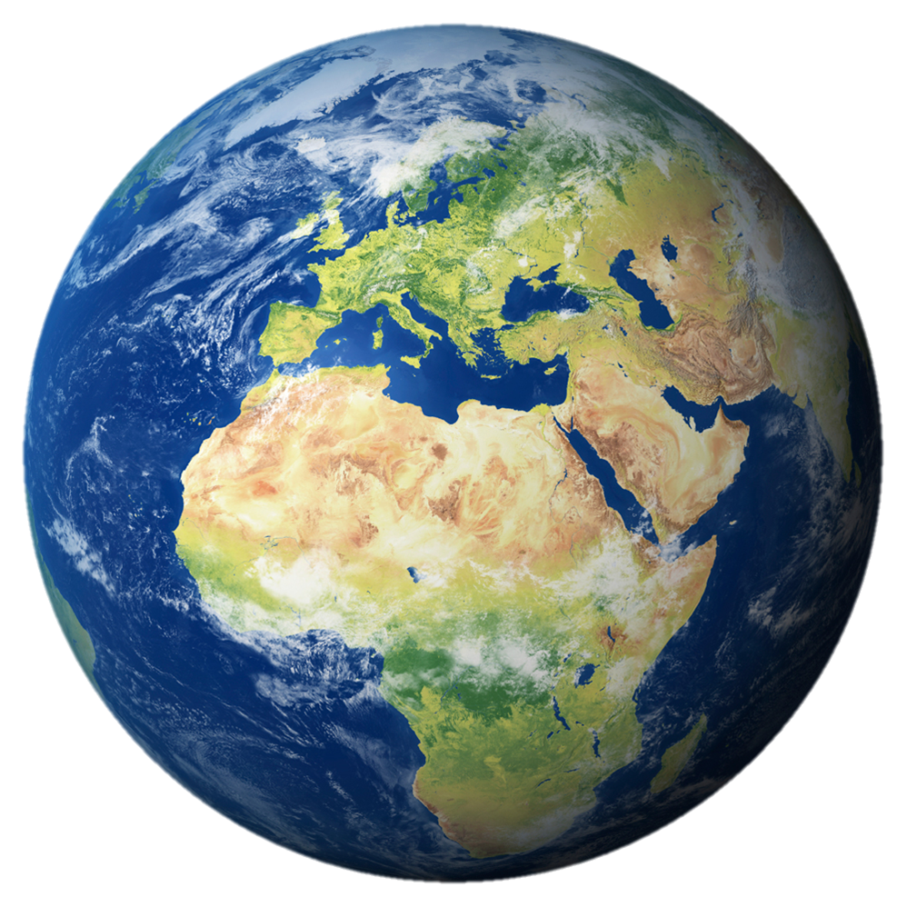

Planets in our solar system
1.Mercury

Mercury is the planet that is the closest to the Sun. It is also the smallest planet in the Solar system. An interesting thing about the planet is that it's surface temperature can experience massive changes depending on the time
. At night the temperature can get as low as -176°C and during the day it can reach 427 °C.
2.Venus

Venus is the second planet in the Solar system and it is similar in size with Earth. Although Mercury is the planet that is closest to the Sun it is not the one with the highest temperatures, Venus is the hottest. That is because of it's
dense atmosphere. Venus is also the brightest night sky object other than the moon, because of that it is also called "morning star" or "evening star".
3.Earth

Earth is the third planet from the Solar system and the only place in the known universe that can support life , it is our home. About 71% of it's surface is covered with water. Earth has only one natural satellite and that is the Moon.
It is the largest satellite relative to the size of the planet in the Solar system.
4.Mars

Mars is the fourth planet in the Solar system and it is the second smallest. It is also known as the "Red Planet". It is called like that, because of the iron oxide on it's surface. Mars has the highest peak in the Solar system which
is situated on the volcano Olympus Mons. It is also our best bet for colonizing as it has gravity similar to that of Earth and the temperatures and atmospheric pressure are survivable with the right equipment.
Mars is the fourth planet in the Solar system and it is the second smallest. It is also known as the "Red Planet". It is called like that, because of the iron oxide on it's surface. Mars has the highest peak in the Solar system which is situated on the volcano Olympus Mons. It is also our best bet for colonizing as it has gravity similar to that of Earth and the temperatures and atmospheric pressure are survivable with the right equipment.